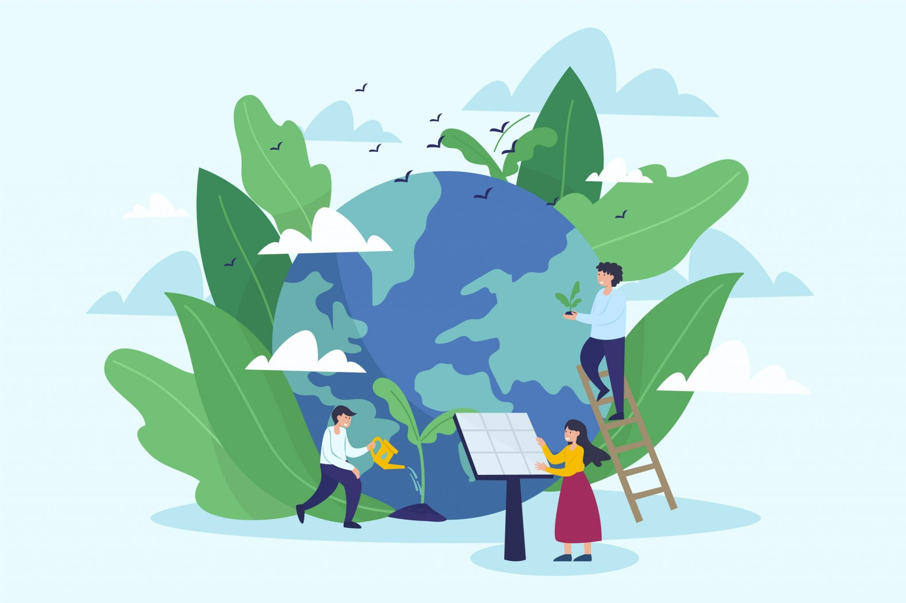
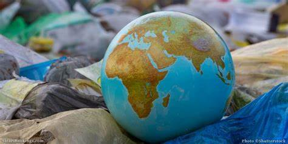

¿Qué es el cambio climatico?
Un cambio climático se define como la variación en el estado del sistema climático terrestre, formado
por la atmósfera, la hidrosfera, la criosfera, la litosfera y la biosfera, que perdura durante periodos
de tiempo suficientemente largos (décadas o más tiempo) hasta alcanzar un nuevo equilibrio. Puede afectar
tanto a los valores medios meteorológicos como a su variabilidad y extremos.
Formas para prevenir el cambio climatico

*Separar nuestra basura, reciclar y reutilizar.
*El ahorro energético
*No abusar de la calefacción en inverno y del aire acondicionado en verano.
*Mantener nuestra vivienda bien aislada.
*Desenchufar el cargador del móvil cuando no lo usemos.
*Ahorrar agua
*Consumir alimentos bajos en carbono, poco procesados, de temporada y de origen local o cercano.
*Evitar la utilización de embalajes excesivos en nuestras compras
*Usar nuestro vehículo solo lo estrictamente necesario.
*Realizar un buen mantenimiento de nuestro vehículo para evitar un gasto innecesario y controlar las emisiones.
*Adoptar el uso de energías renovables

¿Cómo afecta el cambio climatico a la sociedad?
El cambio climático produce un impacto importante en las sociedades, bien directamente (por las olas de calor;
las inundaciones; los episodios climatológicos extremos…) bien indirectamente a través del cambio en el medio
biogeofísico (en la disponibilidad de agua, en los cultivos, en la conflictividad social…).